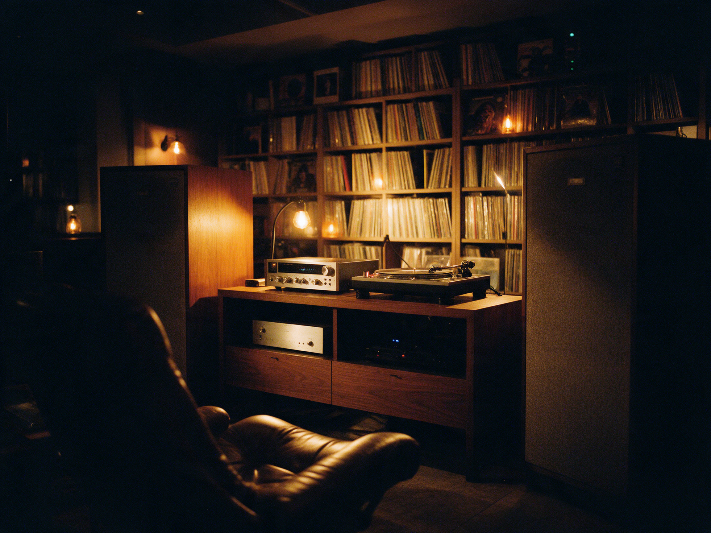

Listening bar · after dark
A room built
for listening.
Not a backdrop. Not a playlist on shuffle. An evening arranged in movements, where the needle stays down and the glass stays cold.
The door
Outside, the street keeps its own time. Inside, we keep a different one.
You cross a threshold and the volume of everything else drops. Coats find hooks. Voices find a lower register. The room asks for one small agreement before it gives anything back: be here, on purpose.
This is the hush before the first note.
The room
Amber light held low enough to soften the edges, never low enough to lose the grain of the wood. Speakers placed like instruments, not furniture.
Every seat has a line of sight and a pocket of quiet. The room is tuned before the record is chosen.
Warmth is a kind of engineering.

The pour
The bar works at the tempo of the room. Ice cut clear. Citrus expressed over the glass. A pour measured because the drink is part of the listening.
Highballs that keep their lift, low light in the glass, nothing sweetened to shout over the record.
Attention has a flavour.
The record
One album. Side A to side B.
We do not skip.
The sleeve rests where you can see it. The room settles into the sequence the artist chose. In a city of fragments, a whole record is a small, radical courtesy.
The stay
Aurum Listening Bar
12 Mercer Lane, lower level
Evenings, Tuesday to Saturday
To hold a seat for the evening, write to listen@aurum.bar with your night and party of two or four.
A concept site, self-authored under explicit creative delegation. Imagery generated for atmosphere; no reservations are real.